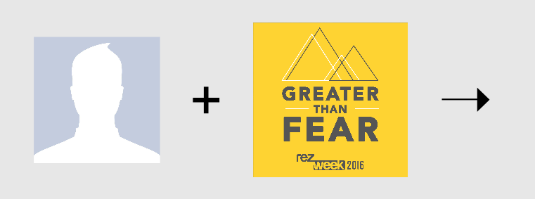
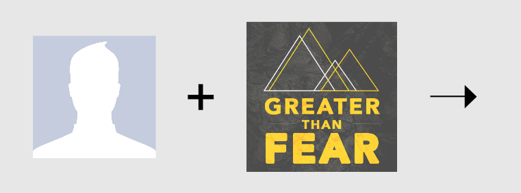

Get ready for RezWeek 2016!
Upload your own photo
Click on the image below to upload your own photo with the filter you want.
RezWeek 2016:

Greater Than Fear:

Please wait while we process your profile picture...
Powered by by the Wolfram Language.